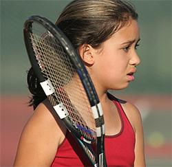
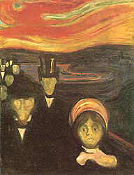
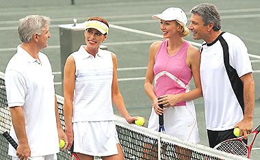
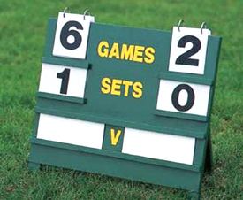
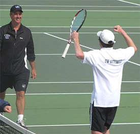

Previous: Personal Antagonism Doesn't Pay | 🏠 Mental Game Home | Next: Replacing Confidence with Emotional Discipline
Reducing Stress
Comprehensive unified tennis knowledge base — Fundamentals, Stroke Analysis, Reference Library, and more
Reducing Stress
By Allen Fox, Ph.D.
Stress can lead to powerful counterproductive emotions.
Changing your perspective on competition can reduce stress. As we have seen, serious tennis matches involve fears of failure and are often stressful, and this stress can give rise to powerful counterproductive emotions.
These emotions can be controlled, but the greater the stress, the more difficult this task becomes. So part of the emotional control process involves reducing the underlying stress by changing one's perspective on the competitive situation itself. (For more on how emotions can be counterproductive, Click Here.)
Tennis players of all levels, from touring pros to beginning recreational players, experience stress from the same basic sources. The most common is wanting to win too much and the associated uncertainty of outcome. It is amplified by a number of other factors, all of which involve inaccurate perceptions or evaluations of reality.
One way of reducing stress, then, is to understand the process of competition more realistically and accurately. To do this, we'll look at specific examples I've observed in consulting with players, and these can illuminate the differences between accurate and inaccurate perspectives.

Expectations dating from junior tennis can lead to shaky nerves years later.
Concern about what others will think is stressful. One of the most common stress amplifiers is concern over what other people will think if they lose. An example came to me in the person of "Julie," (we'll call her) a world-ranked young lady on the WTA tour, who was getting excessively nervous during matches. She said the stress of the tour was getting to her, and my first question was, "What is it, specifically, that worries you most?" One might ordinarily think it would be the money or ranking, but she said it was what other people would think if she lost.
As a teenager Julie had been a promising star, quickly rising to a top 100 world-ranking, and the press was touting her as the "next big thing in US women's tennis." During these heady and exciting times, she had experienced little in the way of shaky nerves. But injuries and personal issues had sidelined her for the better part several years. At the time we worked together she was just 21, physically fit and well-practiced, but unable to perform up to her pre-injury level because of her shaky nerves.

Human beings can be haunted by anxiety over how others see us.
Julie confided that she desperately wanted to prove to the other players, her managers, her equipment sponsors, and her friends that she again belonged in the higher levels of the game, worthy of notice and respect. She was haunted by the feeling that when she lost people were thinking, "Poor Julie. She used to be a great prospect. Too bad she fizzled." Dogged by these thoughts, it's small wonder she was excessively stressed and finding competition unpleasant.
We can all identify with Julie because we are all, as a social species, genetically programmed to seek the approval of others. Oh sure, we are told that we shouldn't care what other people say about us, but try as we might, we still do. And we've all heard that old saying, "Sticks and stones can break your bones but words can never harm you." It's actually quite the opposite!
Because concern about the opinions of others is so basic I will not claim you can rid yourself of such feelings entirely. But you can reduce them by making a conscious effort to see the reality of the situation.
To start with, recognize that other people are interested mainly in themselves. After you win they may congratulate and compliment you, and after you lose they may commiserate, but these are just social niceties. How deeply concerned are they really? Not very, I would venture.

How deeply are others really concerned about your tennis? Not very.
They would be more engrossed if the topic were their tennis rather than yours. You can appreciate this by turning the situation around. How emotionally involved or even interested are you in their tennis losses or wins? Of course, you may not admit it aloud, but higher on your list of priorities is what you are going to have for dinner.
Moreover, your true friends will value you equally whether you win or lose. Anyone who doesn't is not worth having as a "friend," and if you are smart you will keep your distance from such people because they are likely to be shallow, insecure, and somewhat parasitic. (The only people who selflessly and significantly care about whether you win or lose are your parents, your coach, and your spouse.
So if, during play, you find your thoughts drifting towards what others will think if you lose, pause for a moment and say to yourself, "They couldn't care less! I'm playing for myself." (And if you were wondering, Julie worked her way back into the top 100 and was again being talked up by the press and the other players. This time, however, she had a more accurate assessment of such praise as superficial and meaningless.)
Feeling compelled to control outcomes causes stress.
Reduce stress by accepting that match outcomes are never completely controllable. Feeling compelled to control the outcome of a difficult match causes stress because it is an impossible task. Players make themselves anxious with thoughts like, "I must win this point." or "I must win this match."
There is no need to become mentally entangled with such worries. Instead, it's best to accept the reality that the outcome of difficult matches can never be completely controlled. There can be no certainty, regardless of how much you might wish it to be otherwise.
Decide that you will not, during play, concern yourself with whether you will win or lose, since the final result is unknowable no matter what you do. Reduce your stress by conceptualizing the match outcome as merely a probability issue. Instead of focusing on winning, focus on maximizing your probabilities of success on each point, one at a time. The ultimate outcome will then take care of itself.
On a roller coaster you are going downhill whether you like it or not.
As a general rule, it is always wise to simply accept that which you can't control. This is liberating and calming. The situation is analogous to riding a roller-coaster. When the car begins its scary drop down the first hill some people tighten their bellies, grab the sides of the car, and try to resist the sensations of falling. This makes the event unpleasant. They are going down the hill whether they like it or not.
It's better to relax and go with the feeling of falling rather than trying to resist it, since resistance is impossible. They are better off trying to enjoy the experience rather than fighting it. Similarly, since the outcome of a difficult match is also controllable, it is practical to concentrate on playing each point as well as you can and trying to enjoy the competitive experience. Be prepared to simply accept the outcome, whatever it is, and move on.
Worrying about the score is stressful. As a match proceeds most players become overly concerned with the score, carefully tracking its every twist and turn. They constantly measure their chances of winning the game, set, or match and take a disquieting interest in the minutiae of its progress. For them being down 0-40 puts an entirely different emotional spin on a game than being up 40-0. An unfavorable score can be perturbing, whereas being ahead is uplifting.

Deep involvement with the scoreboard can only lead to stress.
This deep involvement in score would be productive if you were betting. Then you would want to know the exact odds and would bet accordingly. But you are not betting. You are simply playing, and the score and odds of winning are not your problem. Regardless of score, you must realize that you simply don't know what's going to happen. You must be prepared to play out the match, one point at a time, as best you can no matter what the score or odds are, so strive to forget about them.
High Goals
Too great an emphasis on goals can be stressful. Having high goals is normally a good thing. But like most good things, too much of it can turn it bad. Such was the case with a young college freshman, let's call him Frank, with whom I consulted.
Frank had been an outstanding junior, consistently ranked among the top three in his age division in the United States, and was on a full tennis scholarship at a major university. But Frank was very unhappy. He had started the season playing #2 on the team but had performed so poorly that he had eventually worked his way down to #6.
He was not getting along with his coach, disliked his teammates, did not feel he was benefiting from team practices, and was terribly discouraged as his game seemed to be getting worse instead of better. Miserable and unable to dig himself out of this morass of discontent, Frank was thinking quitting the team and transferring to a different school.
College players may dream, unrealistically, of leaving the classroom behind.
When trying to come to grips with issues like Frank's my first move is to try to understand the cause of the difficulties. Is there a common thread among the problems? As a start we reviewed the events leading up to his decision to go to the university. His last year of high school had been a happy and productive one, and the summer had begun as a time of great excitement and hope.
He was scheduled to compete in a number of minor professional events - Futures-level tournaments and Challenger Tour qualifying tournaments, in addition to the major national junior tournaments. Although he had been offered tennis scholarships at several outstanding universities, he had not made up his mind to accept one. His alternative was to skip college and go full-time on the pro tour. Frank planned to let his summer tournament results settle the issue. If he did well, he would turn pro; if not, he would take a scholarship and go to college.
As is commonly the case with very high-ranking young players, Frank's heart was set on a pro career. His hopes were riding on having a great summer, making a thrilling jump into the pro ranks, and eventually earning a living doing what he loved - playing professional tennis tournaments. His goals also included leaving the mundane world of classrooms, homework, and college tennis far behind. Unfortunately, barring his way was a horde of equally talented young players with the same ideas.
Self-induced pressure can result in poor performance.
Under pressure (self-induced, of course) to make his dreams come true, Frank performed poorly during the summer. He was upset at Kalamazoo in the national junior championships, and fared no better in the pro events. As the summer progressed, Frank's hopes gradually dimmed. He lost match after match, his confidence dissipated, and he played progressively worse, ultimately abandoning his hopes of making an immediate jump into the pros. So when the summer ended he accepted a scholarship and entered college.
But even here he ran into problems and soon found himself struggling with another deteriorating situation. What was the common factor? It was his extremely high goals and his disappointment at not reaching them. Frank entered college with the wrong attitude.
Instead of being excited at the prospect of studying at an excellent university and being part of a high-ranking college tennis team, he was miserable about being there at all. To him college was the booby prize for not making it at the professional level. He felt stuck with what he saw as a bunch of mediocre players who were unlikely to ever reach the professional level. Perceiving college as a come-down, he soon found it difficult to motivate himself in the practices and matches.
As night follows day, his match performances deteriorated. Although Frank considered his college opponents to be no better than ordinary, they were, nonetheless, quite good enough to beat him when his attitude was so negative. Frank's various problems fed off of each other and created, in his head, a stressful and poisonous stew.
Frustrated expectations can lead to a negative attitude.
Frank gradually sorted out most of his issues by understanding that his perspective had been inaccurate. He had not been appreciative of what he had. Rather he had focused on what he felt he ought to have but didn't. His goals had run amuck and morphed into expectations. (These commonly lead to disappointment and trouble.)
Healthy goals are normally motivating and uplifting, and should act as guideposts towards which you gradually progress. But they need to be kept in perspective. There is no guarantee that your hopes and dreams will come true, and you should realize that you won't have lost anything if they don't.
In fact they will have served you well if they helped you focus on improvement. They will have made you better than you would have been without them. But they must not be confused with certainties.
Because so many people had, over the years, told Frank he was going to be a great player, and because he had always risen so quickly to the top ranking of his age group, he had expected to achieve his high goals on his own accelerated schedule, underestimating the real difficulties and setting himself up for the frustration and unhappiness that were his undoing.
Frank's frustrated expectations had given him a negative attitude, and most of his problems followed as a result. His thinking had cast a pall over what should have been a happy and positive situation. It led him to view his has classes as a drag, his coach as an antagonist (rather than as an ally), his teammates as a bunch of second-rate players (instead of as friends and companions), and his intercollegiate opponents as undeserving of respect. With this outlook, losses and a downward spiral were inevitable. Once he changed it, things gradually turned around for him.

Players need the right expectations to enjoy college tennis.
He began to realize that there was life outside of tennis, and that a college education and degree were valuable. He took his classes and studies more seriously and even found some of them to be interesting. Paradoxically, this improved his tennis. It gave him alternatives and reduced the stress and anxiety he was under when he felt he had to make it as a professional and feared that he wouldn't.
He even started to enjoy the practices, become friendlier with his teammates, and move up on the team. When we last spoke he was a sophomore and playing in the #2 position. He had a more positive and accurate view of his situation. He was practicing hard, gradually improving, and had given up his expectations but not his hopes. He was still young, and he knew that players reach their peaks at different rates. He could yet make it as a professional - but he would not have to cut his wrists if he didn't.
This article is excerpted from Allen's new book, Tennis: Winning the Mental Match, which will be available at the end of 2010 on Amazon and on Allen's new website, www.allenfoxtennis.net.
Read More From Allen!
Visit him at www.allenfoxtennis.net

Winning the Mental Match Dr. Allen Fox
Tennis is mentally the most difficult sport due to it’s personal nature which makes winning and losing feel more important than they are. In this new book, Allen offers his proven solutions to problems such as choking, reducing stress, finishing matches, and developing confidence. Based on a life time of high level play and coaching success, it’s a must for all competitive players.
Click Here to Order.

Winning may not be everything, but Dr. Allen Fox points out that, if we are honest with ourselves, winning is still eminently preferable to losing. In his new book, The Winner's Mind, Allen lays out an original step-by-step plan for succeeding at any of life's endeavors, based on his first hand and very personal observations of the careers of both world-class tennis players and successful businessman.
The bottom line is that even if you are not a born champion--and only a tiny percentage of us are--you can still use the success strategies of champions to tilt the odds in your favor. Writing with brutal honesty and dry humor, Fox lays out the common mental characteristics of winners in sports and in life. He explains the critical role of intellect over emotion. He analyzes the struggle between ambition and fear and the insidious and pervasive fear of failure that undermines so many of us.
He then outline how to confront and overcome these fears in your life and career, even when they are initially subconscious. Must reading from one of the great thinkers in tennis, and a Renaissance Man in life. Click Here to Order.
To purchase this book you can also send a check for $17.95 to Allen Fox, 1120 Inverness Place, San Luis Obispo, CA. 93401. The price includes shipping.

Allen Fox PhD is a former world class player, a coach, a psychologist, and one of the most original and insightful analysts in modern tennis. A top 10 American player from the glory days before Open tennis, Fox played many of the legendary greats, among them Roy Emerson, Rod Laver, Stan Smith, and Arthur Ashe. At Pepperdine he developed the men's tennis program into an elite contender for national titles, and gave Brad Gilbert the insights that became the foundation for "Winning Ugly". His book Think to Win is a modern classic. He has also starred in a series of acclaimed videos, including Pro Secrets of Match Play and Allen Fox's Ultimate Tennis Lesson.
Source: tennisplayer.net archive — Reducing Stress.docx (John Yandell teaching library, 2002-2022). Extracted and rendered as HTML for Tennis Future Lab.